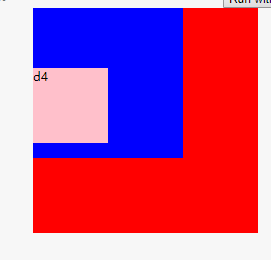
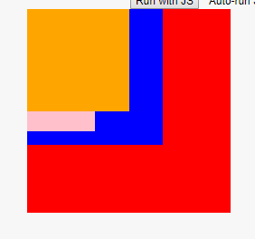
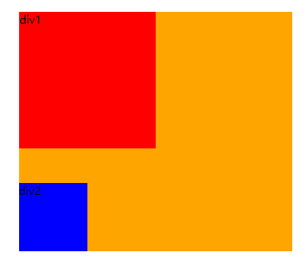
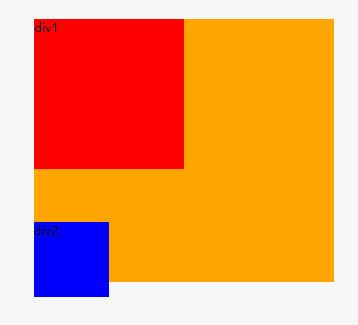
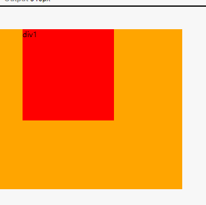
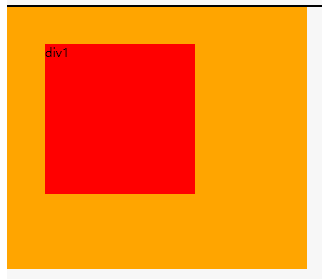
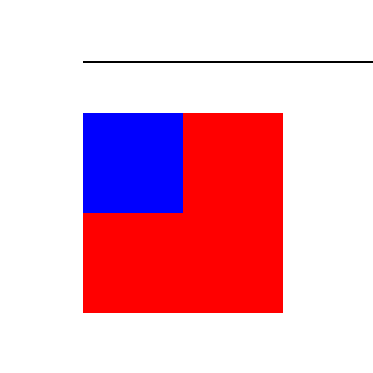
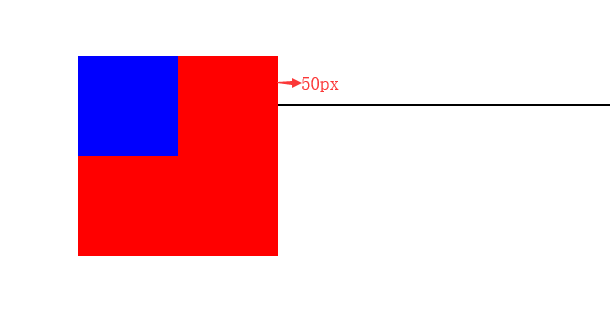

1. 浮动元素的特征，对其他浮动元素、普通元素、文字的影响
浮动模型是一种可视化格式模型，浮动元素可以左右移动（根据float属性值而定），直到它的外边缘碰到包含框或者另一个浮动元素的框的边缘。浮动元素不在文档的普通流中，文档的普通流中的元素表现的就像浮动元素不存在一样.
- 对父元素的影响：正常情况下即在没有浮动的时候，父元素的高度由子元素来撑开，元素浮动之后，父元素中好像什么都没了，高度消失。
- 对其他浮动元素的影响：多个浮动元素相邻，如果包含块太窄无法容纳水平排列的全部浮动元素，那么其它浮动元素会向下移动，直到有足够的空间，而如果浮动元素的高度不同，那么向下移动的时候可能会被卡住。
- 对普通元素的影响：普通元素在占据浮动元素原来占据的空间，并被浮动元素遮挡。
- 文字的影响：文字可以发现浮动元素，并留出空间。
2.清除浮动指什么？如何清除浮动？
清除浮动是指消除浮动元素对其父元素因浮动造成的高度塌陷的问题。
- 在父元素最后添加一个空的div，并设置属性
clear:both.但是这种方法并不好，会添加一个无意义的标签。 - BFC清除，给父元素添加以下属性使其生成一个BFC包围浮动元素
- float:left/right
- overflow:hidden/auto/scrool
- display: table-cell / table-caption / inline-block
- position: absolute / fixed
- 最常见的最实用的清除浮动方式和1类似，不过是用伪元素代替div，给父元素添加一个类，如clearfix，再给这个类添加以下样式：
1
2
3
4
5
6
7
8.clearfix{
*zoom:1; /*使ie6，7的hasLayout为true,达到和BFC相同效果*/
}
.clearfix:after{
content:"";
display:table;
clear:both;
}
3.定位方式
| 方式 | 属性 | 参考点 | 使用场景 |
|---|---|---|---|
| static | 默认文档流，不定位 | / | 正常文档流 |
| relative | 生成相对定位的元素，相对于元素本身正常位置进行定位 | 本身正常位置 | 为绝对定位设定参照物或对元素自身位置进行局部调整 |
| absolute | 生成绝对定位元素，相对于static定位以外的第一个祖先元素（offset parent）进行定位,元素的位置通过left,top,right以及bottom属性进行规定 | 非static定位的第一个祖先元素 | 当想让元素参照特定参照物进行定位时使用 |
| fixed | 生成绝对定位的元素，相对于浏览器窗口进行定位。元素的位置通过left,top,right以及bottom属性进行规定 | viewport | 当需要相对于viewport进行定位时使用 |
4.z-index的作用
z-index是有定位属性relative/absolute/fixed的元素才起作用，值越大的越排在上面，z-index值大的定位元素可以遮挡住值小的元素。也就是说z-index的使用要配合position:relative/absolute/fixed来使用。
补充：z-index的比较是在同级元素之间进行，具体可见例子：
1 | html |
1 | *{ |

d2的z-index最大，可是并不是在最上面，可见是先比较都是父级且为兄弟元素d1和d3的层级关系。
还有一点比较在意，如果d1的z-index不设置，那么就比较d2与d3的z-index。就会出现如下情况

这种情况记住就行，不过大多情况是比较兄弟 元素之间的层级的。
5.position:relative和负margin使元素偏移的区别
- position:relative元素偏移前的空间还保留在那，视觉上发生偏移，也就是说这种方式不会影响文档流。
- 负margin是真正的发生了偏移，原来的位置不复存在，影响了文档流。
6.BFC是什么？如何生成？有什么作用？
BFC（Block Format Content），即块级格式化上下文。对浮动、定位（绝对定位、固定定位）元素、块级容器（如inline-block、 table-cell、table-caption）并不是块级盒子，还包括那些overflow属性值取值visible以外的块级盒子，会为它们的内容创建一个新的块级格式化上下文。
生成BFC可以给元素加以下属性
- float:left/right
- overflow:hidden/auto/scrool
- display: table-cell / table-caption / inline-block
- position: absolute / fixed
BFC的作用
- BFC可以解决margin重叠问题。margin重叠是指处于同一个BFC的相邻元素、嵌套元素，只要它们之间没有阻挡（如：边框、非空内容、padding等）就会发生margin重叠。这时只要让其中一个元素生成新的BFC就能解决margin重叠问题。
- BFC可以清除浮动影响。因为BFC可以包含浮动，所以让父容器生成新的BFC可以让父容器在视觉上包围了浮动的子元素，因而清除了子元素浮动造成父容器高度塌陷问题。
7.在什么场景下会出现外边距合并？如何合并？如何不让相邻元素外边距合并？
外边距合并：当两个垂直外边距相遇时，即当一个元素出现在另一个元素上面时，第一个元素的下外边距与第二个元素的上外边距会发生合并，它们将形成一个外边距合并后的外边距的高度等于两个发生合并的外边距的高度中的较大者。
相邻兄弟元素
1
2
3
4
5
6
7
8
9
10
11
12
13
14
15
16
17
18
19
20
21
22
23
24
25
26
27
28
29
30<style>
*{
padding:0;
margin:0;
}
.big{
width:400px;
height:350px;
background-color:orange;
}
.div1{
width:200px;
height:200px;
background-color:red;
margin-bottom:50px;
}
.div2{
width:100px;
height:100px;
margin-top:20px;
background-color:blue;
}
</style>
</head>
<body>
<div class="big">
<div class="div1">div1</div>
<div class="div2">div2</div>
</div>
</body>
总高度是350px,div1高200px，div2高100px,div1的下边距是50px，常理来说，此时div2的上边距为0才能保证div2不超出大div的范围，但例子中div2也确实有20px的上边距，结果是即使有20px的上边距div2也没有超出大div，原因就是边距发生了重叠，并取了其中较大者。要使其不合并，就如下面例子  给div2添加float属性生成新的BFC即可
父子元素
如例1
2
3
4
5
6
7
8
9
10
11
12
13
14
15
16
17
18
19
20
21
22
23
24
25
26
27
28
29
30
31<style>
*{
padding:0;
margin:0;
}
.big{
width:400px;
height:350px;
background-color:orange;
}
.div1{
width:200px;
height:200px;
background-color:red;
margin:50px;
}
.line{
width:100%;
height:2px;
background:black;
}
</style>
</head>
<body>
<div class="line"></div>
<div class="big">
<div class="div1">
div1
</div>
</div>
</body>
大div没有上边距，div1有上边距50px，两者合并，取了较大值div1的上边距50px，所以大div距离顶部50px，解决方法同样的，给div1添加float属性即可
1
2
3
4
5
6
7.div1{
width:200px;
height:200px;
background-color:red;
margin:50px;
float:left;
}
补充：当要合并的margin其中一个为负值的时候，要计算一下，不是简单的取大值（正值，负值当然比正值小），计算方法相加，得出最终的合并后的margin值
1 | <div class="d1"> |

当两个都为负值的时候，就取绝对值大margin值那个负margin
1 | .d2{ |
